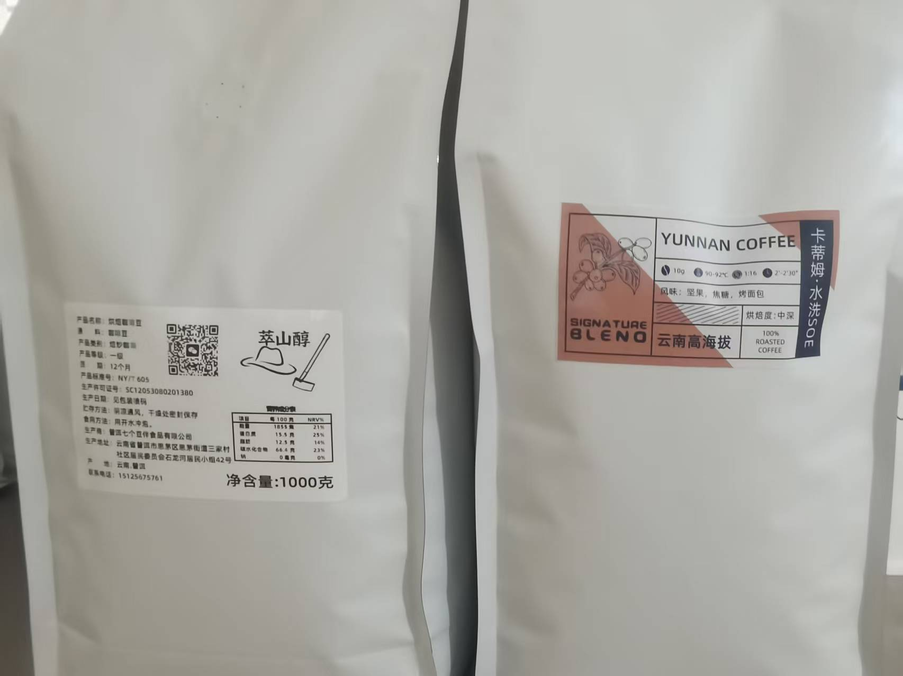

1 kg pack shown · Click photo to enlarge
CO-HUB Grade 1 SOE
Pu’er washed · Single origin
A clean, bright cup made with washed coffee from Pu’er. Nut, caramel and toasted-bread notes lead into a lingering sweet finish.
250 gRM 48
1 kgRM 156